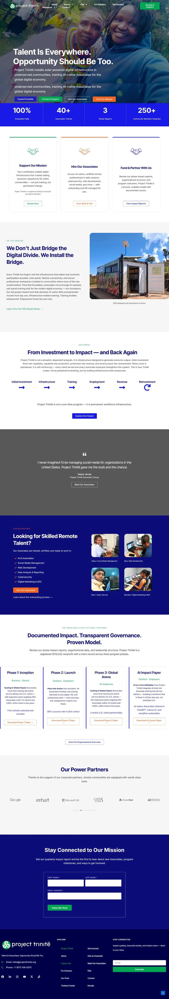

Hover to scroll, click to enlargeTap to see the full page
Nonprofit · Kenya, Haiti and US
Project Trinitē
A website for a nonprofit that installs solar-powered digital hubs in underserved communities and trains people for remote digital work. I lead the organisation's IT team, and the site has to speak to donors, grant makers and employers at once.
- Built and maintain the site, with separate paths for supporters, employers and grant makers
- Downloadable impact reports, a donation flow and a newsletter signup
- Connected to the organisation's CRM and automation tools so enquiries reach the right team